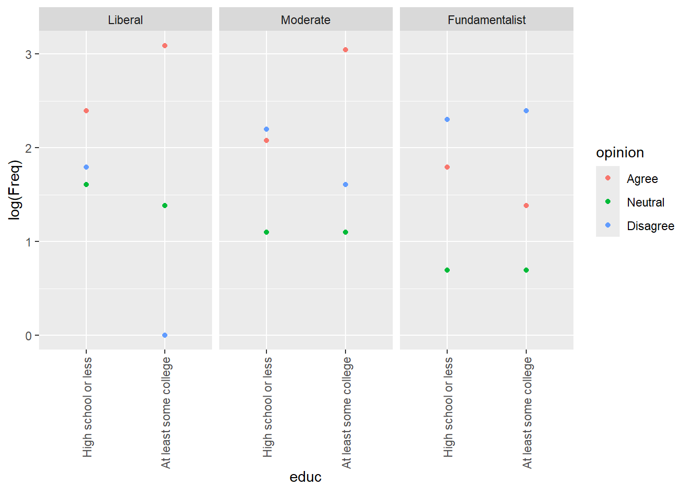

library(arm)
library(Sleuth3)
library(tidyverse)
library(vcdExtra)
library(magrittr)5 Log Lin Reg
5 Log lin reg
Count responses
Please load these libraries that you’ll need for this lab:
In this lab, we’ll go over log linear regression in the case of count data in a little more detail than you saw in the narrated lectures. We’ll cover the deviance goodness of fit test (which, remember, is an informal test here) and the drop in deviance test in R; and we’ll discuss residuals and model evaluation. You’ll see more about over dispersion in the case of Poisson counts, and we’ll cover the negative binomial model for over dispersion. We’ll conclude with another example of log linear regression for general contingency tables.
Salamander Data
The data that we’ll use for this lab concern salamander habitat:
# ?case2202
salamanders <- case2202
head(salamanders)| Site | Salamanders | PctCover | ForestAge |
|---|---|---|---|
| 1 | 13 | 85 | 316 |
| 2 | 11 | 86 | 88 |
| 3 | 11 | 90 | 548 |
| 4 | 9 | 88 | 64 |
| 5 | 8 | 89 | 43 |
| 6 | 7 | 83 | 368 |
As you can see (and read about in the help file) the salamanders data contain counts of salamanders at 47 sites in national forest and parkland; the available explanatory information is PctCover, a percentage of canopy cover at the site and ForestAge, the age of the forest at the site.
Some data exploration
We’ll start with some exploration of the data.
ggplot(data = salamanders, aes(x = PctCover, y = Salamanders)) + geom_point() + ggtitle("Salamanders vs Percent Cover")
This first figure seems to indicate that there are two distinct types of sites those with PctCover below about 53% and those with PctCover greater than 75%. It also seems clear that only sites with PctCover greater than 75% have Salamander counts higher than 2.
Here’s another plot:
ggplot(data = salamanders, aes(x = ForestAge, y = Salamanders)) + geom_point() + ggtitle("Salamanders vs Forest Age")There doesn’t appear to be anything remarkable about this plot, though it’s important to notice the range of the x-axis scale – it’s fairly large. This suggests that we might observe something more informative if we look at ForestAge on the log scale.
ggplot(data = salamanders, aes(x = log(ForestAge + 1/2), y = Salamanders)) + geom_point() + ggtitle("Salamanders vs log(Forest Age)")Notice that we used x = log(ForestAge + 1/2) in the ggplot() function call because some of the ForestAge values are zero, and log(0) is undefined.
This plot seems to indicate a clearer relationship between ForestAge and Salamanders as ForestAge increases on the log scale, the salamander counts tend to increase and they get more variable. Let’s also look at the relationship between the two explanatory variables:
(ggplot(data = salamanders, aes(x = log(ForestAge + 1/2), y = PctCover)) + geom_point() + ggtitle("Percent Cover vs log(Forest Age"))This plot tells and interesting story almost all of the older sites are those with PctCover greater than 75%. For the younger sites, there is a increasing (perhaps curvilinear) relationship with PctCover.
Remember that multicollinearity is a problem when two or more explanatory variables are highly correlated. Let’s check the correlation between log-transformed PctCover and the ForestAge variable.
salamanders %<>% mutate(Site = Site, Salamanders = Salamanders, ForestAge = ForestAge, logPctCover = log(PctCover + 1/2))
cor(salamanders$ForestAge,salamanders$logPctCover)[1] 0.5352604The correlation is not actually so high that we should be concerned about it. Remember, too, that correlation tells us about the linear association between two variables. In terms of a linear association, these two variables are moderately correlated – even though from our last plot we see that there is a strong relationship between them.
Because of the distinctive cut-point in the PctForest variable, we’ll create a new variable, called CovGroup, that just takes the value 0 if PctCover < 75) and 1 otherwise.
salamanders$CovGroup <- ifelse(salamanders$PctCover < 75,0,1)Finally, as a last bit of exploration, let’s just take a look at the histogram of Salamander counts.
ggplot(salamanders,aes(Salamanders)) + geom_histogram()`stat_bin()` using `bins = 30`. Pick better value with `binwidth`.
You can see that there are a lot of zeroes in among the Salamander counts. One method for analyzing Poisson count data is to take the log of the counts, and then perform a multiple linear regression. We don’t recommend that here, since there are so many zeroes – you’d have to first add a small amount to the zero counts, then take logs, and that means that interpretations will be difficult.
Instead, we’ll turn to fitting the log linear model (another special case of a generalized linear model).
The Log Linear Model
Remember that for independent Poisson counts, \(Y_1,\ldots,Y_n\), each with rate parameter \(\lambda_i\) for \(i = 1,\ldots,n\), we have
\(log(\lambda_i) = \beta_0 + \beta_1X_{1i} + \cdots + \beta_kX_{ki}\)
for explanatory variables, \(X_1,\ldots,X_k\). Let’s go ahead and fit some models to the salamander data.
Model Fitting
In this part of the lab, we’ll fit several different models, and make some comparisons among them. This is a little bit of data snooping, and we will likely end up with biased estimates in the model we do select (recall the simulation you saw back in Data Analytics I). So, please, consider this to be the academic exercise it’s intended to be!
# model with PctCover only
pois_mod1 <- glm(data = salamanders, Salamanders ~ PctCover, family = poisson)
# model the log(Forest Age + 1/2) only
pois_mod2 <- glm(data = salamanders, Salamanders ~ log(ForestAge + 1/2), family = poisson)
# model with both explanatory variables
pois_mod3 <- glm(data = salamanders, Salamanders ~ PctCover + log(ForestAge + 1/2), family = poisson)
# model with both explanatory variables, plus their interaction
pois_mod4 <- glm(data = salamanders, Salamanders ~ PctCover * log(ForestAge + 1/2), family = poisson)
# comparison of the models
LRstats(pois_mod1, pois_mod2, pois_mod3, pois_mod4)| AIC | BIC | LR Chisq | Df | Pr(>Chisq) | |
|---|---|---|---|---|---|
| pois_mod1 | 210.3639 | 214.0642 | 121.3050 | 45 | 0 |
| pois_mod2 | 243.1239 | 246.8242 | 154.0650 | 45 | 0 |
| pois_mod3 | 212.0690 | 217.6195 | 121.0101 | 44 | 0 |
| pois_mod4 | 213.7578 | 221.1584 | 120.6989 | 43 | 0 |
In terms of the AIC comparisons, there’s not much difference between models 1, 2 and 4; and the same is true if we use the BIC comparisons. This is somewhat surprising – from the exploratory plots above, you might have suspected that both PctCover and ForestAge, and maybe even their interaction might be important. Let’s take a look at the summary information for pois_mod4.
summary(pois_mod4)
Call:
glm(formula = Salamanders ~ PctCover * log(ForestAge + 1/2),
family = poisson, data = salamanders)
Coefficients:
Estimate Std. Error z value Pr(>|z|)
(Intercept) -0.969454 0.820929 -1.181 0.23763
PctCover 0.029067 0.011184 2.599 0.00935 **
log(ForestAge + 1/2) -0.213107 0.293009 -0.727 0.46704
PctCover:log(ForestAge + 1/2) 0.001957 0.003423 0.572 0.56741
---
Signif. codes: 0 '***' 0.001 '**' 0.01 '*' 0.05 '.' 0.1 ' ' 1
(Dispersion parameter for poisson family taken to be 1)
Null deviance: 190.22 on 46 degrees of freedom
Residual deviance: 120.70 on 43 degrees of freedom
AIC: 213.76
Number of Fisher Scoring iterations: 5It looks like there pretty clear evidence of over dispersion, the residual deviance divided by the residual degrees of freedom is
120.7/43[1] 2.806977That’s pretty big. Before we talk a lot more about model fitting and model comparison in terms of what explanatory information to include, we should address the over dispersion. Remember that we can do this using the family = quasipoisson argument to the glm() function, or we can do this using the glm.nb function. We’ll leave it to you to try the quasi-poisson approach, and we’ll go over the negative binomial approach here. We’ll simply fit the same four models as above, but using the negative binomial likelihood rather than the Poisson likelihood.
# model with PctCover only
nb_mod1 <- glm.nb(data = salamanders, Salamanders ~ PctCover)
# model the log(Forest Age + 1/2) only
nb_mod2 <- glm.nb(data = salamanders, Salamanders ~ log(ForestAge + 1/2))
# model with both explanatory variables
nb_mod3 <- glm.nb(data = salamanders, Salamanders ~ PctCover + log(ForestAge + 1/2))
# model with both explanatory variables, plus their interaction
nb_mod4 <- glm.nb(data = salamanders, Salamanders ~ PctCover * log(ForestAge + 1/2))
# comparison of the models
LRstats(nb_mod1, nb_mod2, nb_mod3, nb_mod4)| AIC | BIC | LR Chisq | Df | Pr(>Chisq) | |
|---|---|---|---|---|---|
| nb_mod1 | 176.9625 | 182.5130 | 47.60608 | 45 | 0.3670830 |
| nb_mod2 | 188.2859 | 193.8363 | 47.99615 | 45 | 0.3523296 |
| nb_mod3 | 178.8296 | 186.2302 | 47.56748 | 44 | 0.3295507 |
| nb_mod4 | 180.5434 | 189.7941 | 47.48537 | 43 | 0.2948841 |
Again, there’s no clear winner here in terms of either AIC or BIC, so we’ll go with Occam’s Razor and look at results for the simplest model, nb_mod1.
summary(nb_mod1)
Call:
glm.nb(formula = Salamanders ~ PctCover, data = salamanders,
init.theta = 1.26199236, link = log)
Coefficients:
Estimate Std. Error z value Pr(>|z|)
(Intercept) -1.416365 0.527696 -2.684 0.00727 **
PctCover 0.031513 0.006655 4.735 2.19e-06 ***
---
Signif. codes: 0 '***' 0.001 '**' 0.01 '*' 0.05 '.' 0.1 ' ' 1
(Dispersion parameter for Negative Binomial(1.262) family taken to be 1)
Null deviance: 75.691 on 46 degrees of freedom
Residual deviance: 47.606 on 45 degrees of freedom
AIC: 176.96
Number of Fisher Scoring iterations: 1
Theta: 1.262
Std. Err.: 0.478
2 x log-likelihood: -170.963 Remember that we still didn’t use the CovGroup indicator variable that we created above. Let’s fit a couple more models using that variable, and see where we are.
# model with CovGroup only
nb_mod5 <- glm.nb(data = salamanders, Salamanders ~ CovGroup)
# model with CovGroup*log(ForestAge + 1/2)
nb_mod6 <- glm.nb(data = salamanders, Salamanders ~ CovGroup * log(ForestAge + 1/2))
# compare with the other models
LRstats(nb_mod1,nb_mod2,nb_mod3,nb_mod4,nb_mod5,nb_mod6)| AIC | BIC | LR Chisq | Df | Pr(>Chisq) | |
|---|---|---|---|---|---|
| nb_mod1 | 176.9625 | 182.5130 | 47.60608 | 45 | 0.3670830 |
| nb_mod2 | 188.2859 | 193.8363 | 47.99615 | 45 | 0.3523296 |
| nb_mod3 | 178.8296 | 186.2302 | 47.56748 | 44 | 0.3295507 |
| nb_mod4 | 180.5434 | 189.7941 | 47.48537 | 43 | 0.2948841 |
| nb_mod5 | 176.7513 | 182.3018 | 47.17214 | 45 | 0.3838253 |
| nb_mod6 | 180.7331 | 189.9838 | 47.16892 | 43 | 0.3060094 |
Now it seems like there’s really not much difference among any of these models (except that many nb_mod2 is a clear-ish loser) in terms of AIC or BIC. We’ll continue with nb_mod1 at this point. Let’s take a look at the model and it’s fit.
summary(nb_mod1)
Call:
glm.nb(formula = Salamanders ~ PctCover, data = salamanders,
init.theta = 1.26199236, link = log)
Coefficients:
Estimate Std. Error z value Pr(>|z|)
(Intercept) -1.416365 0.527696 -2.684 0.00727 **
PctCover 0.031513 0.006655 4.735 2.19e-06 ***
---
Signif. codes: 0 '***' 0.001 '**' 0.01 '*' 0.05 '.' 0.1 ' ' 1
(Dispersion parameter for Negative Binomial(1.262) family taken to be 1)
Null deviance: 75.691 on 46 degrees of freedom
Residual deviance: 47.606 on 45 degrees of freedom
AIC: 176.96
Number of Fisher Scoring iterations: 1
Theta: 1.262
Std. Err.: 0.478
2 x log-likelihood: -170.963 salamanders$resid <- residuals(nb_mod1)
fits <- predict.glm(nb_mod1,scale="data",se.fit=TRUE)
salamanders$fits <- exp(fits$fit)
salamanders$low <- exp(fits$fit-1.96*fits$se.fit)
salamanders$upp <- exp(fits$fit+1.96*fits$se.fit)
ggplot(salamanders,aes(PctCover,Salamanders)) + geom_point() +
geom_line(aes(x = PctCover,
y = fits)) +
geom_ribbon(aes(x = PctCover,
ymin = low,
ymax = upp),
alpha = 0.2)The model fit is not bad – remember that the solid line in the figure above is the model estimate of the Poisson rate parameter at each value of PctCover, and the shaded bands are 95% pointwise confidence intervals. The model output gives strong evidence of a positive association between PctCover and the number of salamanders at a site.
Notice also that the residual deviance divided by its degrees of freedom for nb_mod1 is very close to 1. The negative binomial model also gives an estimate of the “Theta” parameter. In the negative binomial model, if the expected count is \(E(Y)\), the variance of the count is \(Var(Y) = E(Y) + [E(Y)^2]/\theta\).
Since the negative binomial model uses the log-link as does the Poisson model, the interpretation of the coefficient on PctCover is the same as in the Poisson model – an increase of 1% in forest cover is associated with an \(exp(0.0315) = 1.03\)-fold increase in the expected number of salamanders. In other words, a 1% increase in forest cover is associated with a 3% increase in expected number of salamanders at a site.
Model Evaluation
Recall that the deviance goodness of fit test compares a fitted model to a saturated model, or one in which there are as many parameters as there are data points. In these goodness of fit comparisons, the null hypothesis corresponds to the fitted model (which is a reduced model relative to the saturated model), and the alternative hypothesis corresponds to the saturated model. In the case of Poisson counts, the goodness of fit should only be used as a guideline, not as a firm decision making tool.
LRstats(nb_mod1)| AIC | BIC | LR Chisq | Df | Pr(>Chisq) | |
|---|---|---|---|---|---|
| nb_mod1 | 176.9625 | 182.513 | 47.60608 | 45 | 0.367083 |
This large p-value may be an indication of an adequate model, but there are many small counts in the salamanders data, so we should not rely heavily on this result.
Drop-in-deviance test
Just a reminder that the drop in deviance test is different from the deviance goodness of fit test. Whereas the deviance goodness of fit test provides a comparison between a single fitted model and a saturated model, a drop in deviance test provides a way to compare two fitted models when one of those models is nested within the other one. Put another way, the drop in deviance test is a comparison between a reduced model (null hypothesis) and a full model (alternative hypothesis) – and we use it in cases where the reduced model is reduced from (or nested in) the full model.
Using the models we have already fit, let’s use the anova() function to perform a drop in deviance test comparing the model that only contains PctCover to the one that contains PctCover, ForestAge and their interaction.
anova(nb_mod1,nb_mod4,test="Chisq")| Model | theta | Resid. df | 2 x log-lik. | Test | df | LR stat. | Pr(Chi) |
|---|---|---|---|---|---|---|---|
| PctCover | 1.261992 | 45 | -170.9625 | NA | NA | NA | |
| PctCover * log(ForestAge + 1/2) | 1.279151 | 43 | -170.5434 | 1 vs 2 | 2 | 0.419181 | 0.8109163 |
The p-value of the drop in deviance test is rather large, giving us strong evidence that the simpler model is sufficient in this case, as compared to the more complicated model.
Looking at Residuals
As in the case of binomial logistic regression, it can be helpful to look at the deviance and/or Pearson residuals from our negative binomial (or Poisson) regression mode to (a) evaluate the model fit and (b) check for outliers. Provided that the counts are fairly large, both the deviance and Pearson residuals should look like draws from a standard Normal distribution, so too many residuals outside of the [-2,2] interval may be cause for concern. Here, we’ll look at plots of both the deviance and Pearson residuals.
salamanders$residuals_deviance <- residuals(nb_mod1)
salamanders$residuals_pearson <- residuals(nb_mod1, type = "pearson")
ggplot(data = salamanders, aes(PctCover,residuals_deviance)) + geom_point()
ggplot(data = salamanders, aes(PctCover,residuals_pearson)) + geom_point()
ggplot(data = salamanders, aes(residuals_deviance,residuals_pearson)) + geom_point()First, you should notice that there are some distinctive patterns in both the deviance and Pearson residual plots. These kinds of patterns are quite common when we are dealing with count data, and they are result of the discreteness of those counts. In these residual plots, we are more concerned with detecting potential outliers, and there do not appear to be any here.
Next, the plot of the two types of residuals against each other shows the strong relationship between them – in this case it’s not a linear relationship as it was in the case of binomial logistic regression – but it’s a strong relationship nonetheless.
Log Linear Models for General Contingency Tables
We’ll now turn to an example of using a log linear model for data in general contingency tables. The following table relates education level, religious views, and approval of homosexual marriage for 133 Americans age 18-25 (see example 8.4.2 in Agresti (2013)). In this table “agree” indicates that the respondent agrees that homosexual marriage should be allowed in the US.
marriage <- expand.grid(
opinion = factor(c("Agree", "Neutral", "Disagree"), levels = c("Agree", "Neutral", "Disagree")),
relig = factor(c("Fundamentalist", "Moderate", "Liberal"), c("Liberal", "Moderate", "Fundamentalist")),
educ = factor(c("High school or less", "At least some college"), c("High school or less", "At least some college")))
marriage$Freq <- c( 6,2,10,8,3,9,11,5,6,4,2,11,21,3,5,22,4,1)
marriage_tab <- xtabs(data = marriage, Freq ~ educ + relig + opinion)
ftable(marriage_tab) opinion Agree Neutral Disagree
educ relig
High school or less Liberal 11 5 6
Moderate 8 3 9
Fundamentalist 6 2 10
At least some college Liberal 22 4 1
Moderate 21 3 5
Fundamentalist 4 2 11If we just think about questions regarding whether and how these three variables are related, we can fit a log linear model, with the count frequencies as the responses, and the levels of three factors as explanatory information.
mod_relig <- glm(data = marriage_tab, Freq ~ relig + educ + opinion, family = poisson)
summary(mod_relig)
Call:
glm(formula = Freq ~ relig + educ + opinion, family = poisson,
data = marriage_tab)
Coefficients:
Estimate Std. Error z value Pr(>|z|)
(Intercept) 2.482e+00 1.895e-01 13.095 < 2e-16 ***
religModerate -5.009e-15 2.020e-01 0.000 1.0000
religFundamentalist -3.365e-01 2.213e-01 -1.520 0.1284
educAt least some college 1.961e-01 1.743e-01 1.125 0.2604
opinionNeutral -1.332e+00 2.579e-01 -5.165 2.4e-07 ***
opinionDisagree -5.390e-01 1.942e-01 -2.776 0.0055 **
---
Signif. codes: 0 '***' 0.001 '**' 0.01 '*' 0.05 '.' 0.1 ' ' 1
(Dispersion parameter for poisson family taken to be 1)
Null deviance: 72.362 on 17 degrees of freedom
Residual deviance: 34.930 on 12 degrees of freedom
AIC: 111.43
Number of Fisher Scoring iterations: 5The results of this model seem to indicate that the only factor that is associated with variation in the table frequencies is the opinion regarding gay marriage. What about the association questions?
Lab 5 Assignment
Questions
exploration
marriage_tab |> ftable() opinion Agree Neutral Disagree
educ relig
High school or less Liberal 11 5 6
Moderate 8 3 9
Fundamentalist 6 2 10
At least some college Liberal 22 4 1
Moderate 21 3 5
Fundamentalist 4 2 11I am assuming the log relationship due to this being the lab for that scenario.
marriage |> ggplot() +
aes(x = educ, y = log(Freq), color = opinion, shape = relig) +
geom_point() +
scale_x_discrete(guide = guide_axis(angle = 90))
marriage |> ggplot() +
aes(x = relig, y = log(Freq), color = opinion) +
geom_point() + facet_wrap(~educ)Some college is more spread out than high school, opinions cluster more. There is a single count of Liberal, college, disagree that is a potential outlier. In both sets, disagreement increases as liberal goes to fundamentalist and vice versa, agreement goes down.
Neutrality decreases as liberal goes to fundamentalist.
marriage |> ggplot() +
aes(x = educ, y = log(Freq), color = opinion) +
geom_point() +
scale_x_discrete(guide = guide_axis(angle = 90)) +
facet_wrap(~relig)
For college vs religion, among liberals agreement goes up with education, neutrality slightly down. For moderates, it’s the same, but more folks disagree and neutrality might go a little up. For fundamentalists, agreement goes down and disagree up. That is different. Neutrality is roughly the same.
1 fit two way interctions.
- Fit a model to the gay marriage data that includes all two-way interactions. What do you conclude from this model? Be specific and try to address questions having to do with the association among the three variables.
fit saturated
Looking at table.
marriage_tab |> ftable() opinion Agree Neutral Disagree
educ relig
High school or less Liberal 11 5 6
Moderate 8 3 9
Fundamentalist 6 2 10
At least some college Liberal 22 4 1
Moderate 21 3 5
Fundamentalist 4 2 11m2 <- glm(data = marriage_tab,
family = poisson,
Freq~relig*opinion + relig*educ + opinion*educ)
s2 <- summary(m2)
s2
Call:
glm(formula = Freq ~ relig * opinion + relig * educ + opinion *
educ, family = poisson, data = marriage_tab)
Coefficients:
Estimate Std. Error z value
(Intercept) 2.5263 0.2649 9.535
religModerate -0.3176 0.3779 -0.840
religFundamentalist -1.3054 0.4838 -2.699
opinionNeutral -0.9123 0.4562 -2.000
opinionDisagree -1.0287 0.4607 -2.233
educAt least some college 0.4938 0.3216 1.535
religModerate:opinionNeutral -0.2255 0.5911 -0.381
religFundamentalist:opinionNeutral 0.4139 0.7069 0.585
religModerate:opinionDisagree 0.8969 0.5412 1.657
religFundamentalist:opinionDisagree 2.3377 0.5825 4.013
religModerate:educAt least some college 0.2881 0.4250 0.678
religFundamentalist:educAt least some college 0.1739 0.4957 0.351
opinionNeutral:educAt least some college -0.7272 0.5241 -1.388
opinionDisagree:educAt least some college -1.0634 0.4359 -2.440
Pr(>|z|)
(Intercept) < 2e-16 ***
religModerate 0.40067
religFundamentalist 0.00697 **
opinionNeutral 0.04554 *
opinionDisagree 0.02556 *
educAt least some college 0.12467
religModerate:opinionNeutral 0.70287
religFundamentalist:opinionNeutral 0.55823
religModerate:opinionDisagree 0.09750 .
religFundamentalist:opinionDisagree 6e-05 ***
religModerate:educAt least some college 0.49791
religFundamentalist:educAt least some college 0.72573
opinionNeutral:educAt least some college 0.16527
opinionDisagree:educAt least some college 0.01469 *
---
Signif. codes: 0 '***' 0.001 '**' 0.01 '*' 0.05 '.' 0.1 ' ' 1
(Dispersion parameter for poisson family taken to be 1)
Null deviance: 72.3623 on 17 degrees of freedom
Residual deviance: 6.5821 on 4 degrees of freedom
AIC: 99.078
Number of Fisher Scoring iterations: 4It appears that fundamentalists and opinions about gay marriage are main effects that are associated with variation in the table. Those with at least some college who disagree with gay marriage and Fundamentalists who disagree also appear to account for some variation. Also moderates who disagree could also account for some variation.
confint(m2)Waiting for profiling to be done... 2.5 % 97.5 %
(Intercept) 1.9652588 3.00852096
religModerate -1.0740121 0.41947706
religFundamentalist -2.3106386 -0.39824367
opinionNeutral -1.8640548 -0.05379958
opinionDisagree -2.0031444 -0.17037201
educAt least some college -0.1285080 1.14077865
religModerate:opinionNeutral -1.4293902 0.92350177
religFundamentalist:opinionNeutral -1.0566124 1.77303287
religModerate:opinionDisagree -0.1375381 2.00722939
religFundamentalist:opinionDisagree 1.2442200 3.54536159
religModerate:educAt least some college -0.5423790 1.13070428
religFundamentalist:educAt least some college -0.7922154 1.16236149
opinionNeutral:educAt least some college -1.7733304 0.30270736
opinionDisagree:educAt least some college -1.9388926 -0.22115922The 95% confidence intervals for the coefficients of the interaction terms that include zero are:
- religModerate:opinionNeutral
- religModerate:opinionDisagree
- religModerate:educAt least some college
- religFundamentalist:opinionNeutral
- religFundamentalist:educAt least some college
- opinionNeutral:educAt least some college
religModerate:opinionNeutral -1.4293902 0.92350177 religFundamentalist:opinionNeutral -1.0566124 1.77303287 religModerate:opinionDisagree -0.1375381 2.00722939 religFundamentalist:opinionDisagree 1.2442200 3.54536159 religModerate:educAt least some college -0.5423790 1.13070428 religFundamentalist:educAt least some college -0.7922154 1.16236149 opinionNeutral:educAt least some college -1.7733304 0.30270736 opinionDisagree:educAt least some college -1.9388926 -0.22115922
I am interpreting these to mean that there are no interactions between these terms. The following groups are independent of each other:
- Religious moderates and neutrality
- Religious fundamentalists and neutrality
- Religious moderates and disagreeing
- Religious moderates and college
- Religious fundamentalists and At least some college
- At least some college and Neutrality
marriage |> ggplot() +
aes(x = educ, y = log(Freq), color = opinion, size = Freq) +
geom_point() +
scale_x_discrete(guide = guide_axis(angle = 90)) +
facet_wrap(~relig)If we are considering opinion the response, it looks to me like the major interaction here is fundamentalists and college. With the exception of fundamentalists, college tends to result in mostly increasing agreement. However, that is not the case for fundamentalists.
2 fit three way interactions.
- Fit a model that includes all two-way and the three-way interactions. Is there anything problematic about this model? Please explain.
# m2 <- glm(data = marriage_tab,
# family = poisson,
# Freq~relig*opinion + relig*educ + opinion*educ)
# s2 <- summary(m2)
# s2
m3 <- glm(data = marriage_tab,
family = poisson,
Freq~relig*opinion*educ)
s3 <- summary(m3)
s3
Call:
glm(formula = Freq ~ relig * opinion * educ, family = poisson,
data = marriage_tab)
Coefficients:
Estimate
(Intercept) 2.39790
religModerate -0.31845
religFundamentalist -0.60614
opinionNeutral -0.78846
opinionDisagree -0.60614
educAt least some college 0.69315
religModerate:opinionNeutral -0.19237
religFundamentalist:opinionNeutral -0.31015
religModerate:opinionDisagree 0.72392
religFundamentalist:opinionDisagree 1.11696
religModerate:educAt least some college 0.27193
religFundamentalist:educAt least some college -1.09861
opinionNeutral:educAt least some college -0.91629
opinionDisagree:educAt least some college -2.48491
religModerate:opinionNeutral:educAt least some college -0.04879
religFundamentalist:opinionNeutral:educAt least some college 1.32176
religModerate:opinionDisagree:educAt least some college 0.93204
religFundamentalist:opinionDisagree:educAt least some college 2.98568
Std. Error
(Intercept) 0.30151
religModerate 0.46466
religFundamentalist 0.50752
opinionNeutral 0.53936
opinionDisagree 0.50752
educAt least some college 0.36927
religModerate:opinionNeutral 0.86559
religFundamentalist:opinionNeutral 0.97856
religModerate:opinionDisagree 0.70263
religFundamentalist:opinionDisagree 0.72405
religModerate:educAt least some college 0.55586
religFundamentalist:educAt least some college 0.74366
opinionNeutral:educAt least some college 0.76574
opinionDisagree:educAt least some college 1.14150
religModerate:opinionNeutral:educAt least some college 1.19401
religFundamentalist:opinionNeutral:educAt least some college 1.41528
religModerate:opinionDisagree:educAt least some college 1.33669
religFundamentalist:opinionDisagree:educAt least some college 1.38224
z value Pr(>|z|)
(Intercept) 7.953 1.82e-15
religModerate -0.685 0.4931
religFundamentalist -1.194 0.2324
opinionNeutral -1.462 0.1438
opinionDisagree -1.194 0.2324
educAt least some college 1.877 0.0605
religModerate:opinionNeutral -0.222 0.8241
religFundamentalist:opinionNeutral -0.317 0.7513
religModerate:opinionDisagree 1.030 0.3029
religFundamentalist:opinionDisagree 1.543 0.1229
religModerate:educAt least some college 0.489 0.6247
religFundamentalist:educAt least some college -1.477 0.1396
opinionNeutral:educAt least some college -1.197 0.2315
opinionDisagree:educAt least some college -2.177 0.0295
religModerate:opinionNeutral:educAt least some college -0.041 0.9674
religFundamentalist:opinionNeutral:educAt least some college 0.934 0.3503
religModerate:opinionDisagree:educAt least some college 0.697 0.4856
religFundamentalist:opinionDisagree:educAt least some college 2.160 0.0308
(Intercept) ***
religModerate
religFundamentalist
opinionNeutral
opinionDisagree
educAt least some college .
religModerate:opinionNeutral
religFundamentalist:opinionNeutral
religModerate:opinionDisagree
religFundamentalist:opinionDisagree
religModerate:educAt least some college
religFundamentalist:educAt least some college
opinionNeutral:educAt least some college
opinionDisagree:educAt least some college *
religModerate:opinionNeutral:educAt least some college
religFundamentalist:opinionNeutral:educAt least some college
religModerate:opinionDisagree:educAt least some college
religFundamentalist:opinionDisagree:educAt least some college *
---
Signif. codes: 0 '***' 0.001 '**' 0.01 '*' 0.05 '.' 0.1 ' ' 1
(Dispersion parameter for poisson family taken to be 1)
Null deviance: 7.2362e+01 on 17 degrees of freedom
Residual deviance: -2.1867e-21 on 0 degrees of freedom
AIC: 100.5
Number of Fisher Scoring iterations: 3Residual DF are zero, the model is overfit
confint(m3)Waiting for profiling to be done... 2.5 %
(Intercept) 1.742480843
religModerate -1.267420510
religFundamentalist -1.671871082
opinionNeutral -1.943435457
opinionDisagree -1.671871082
educAt least some college -0.009352458
religModerate:opinionNeutral -1.993307908
religFundamentalist:opinionNeutral -2.450923140
religModerate:opinionDisagree -0.637748305
religFundamentalist:opinionDisagree -0.271365102
religModerate:educAt least some college -0.812567305
religFundamentalist:educAt least some college -2.635442109
opinionNeutral:educAt least some college -2.483332868
opinionDisagree:educAt least some college -5.488683217
religModerate:opinionNeutral:educAt least some college -2.420448446
religFundamentalist:opinionNeutral:educAt least some college -1.503710058
religModerate:opinionDisagree:educAt least some college -1.481979451
religFundamentalist:opinionDisagree:educAt least some college 0.502282533
97.5 %
(Intercept) 2.9358420
religModerate 0.5859762
religFundamentalist 0.3601434
opinionNeutral 0.2228733
opinionDisagree 0.3601434
educAt least some college 1.4546181
religModerate:opinionNeutral 1.4884261
religFundamentalist:opinionNeutral 1.5435972
religModerate:opinionDisagree 2.1457413
religFundamentalist:opinionDisagree 2.5975239
religModerate:educAt least some college 1.3871701
religFundamentalist:educAt least some college 0.3397077
opinionNeutral:educAt least some college 0.5862740
opinionDisagree:educAt least some college -0.5634587
religModerate:opinionNeutral:educAt least some college 2.3367740
religFundamentalist:opinionNeutral:educAt least some college 4.1835517
religModerate:opinionDisagree:educAt least some college 4.1546178
religFundamentalist:opinionDisagree:educAt least some college 6.2766234opinionDisagree:educAt least some college -2.48491 1.14150 -2.177 0.0295 *
religFundamentalist:opinionDisagree:educAt least some college 2.98568 1.38224 2.160 0.0308 *
religFundamentalist:opinionNeutral -2.450923140 1.5435972 religModerate:opinionDisagree -0.637748305 2.1457413 religFundamentalist:opinionDisagree -0.271365102 2.5975239 religModerate:educAt least some college -0.812567305 1.3871701 religFundamentalist:educAt least some college -2.635442109 0.3397077 opinionNeutral:educAt least some college -2.483332868 0.5862740 opinionDisagree:educAt least some college -5.488683217 -0.5634587 religModerate:opinionNeutral:educAt least some college -2.420448446 2.3367740 religFundamentalist:opinionNeutral:educAt least some college -1.503710058 4.1835517 religModerate:opinionDisagree:educAt least some college -1.481979451 4.1546178 religFundamentalist:opinionDisagree:educAt least some college 0.502282533 6.2766234
In the model with three way interactions, there were only two significant terms which may be associated with variation in the model. Those are some college/disagreement and fundamentalists/disagree/college. There are 9 interaction terms that appear to be independent of each other, shown above. It looks like college mostly reduced disagreement, except among fundamentalists.
marriage |> ggplot() +
aes(x = educ, y = log(Freq), color = opinion, size = Freq) +
geom_point() +
scale_x_discrete(guide = guide_axis(angle = 90)) +
facet_wrap(~relig)